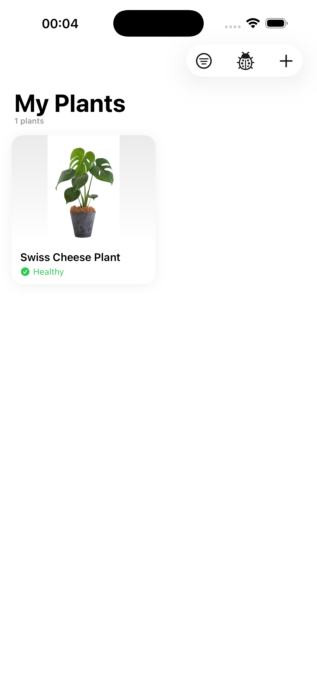
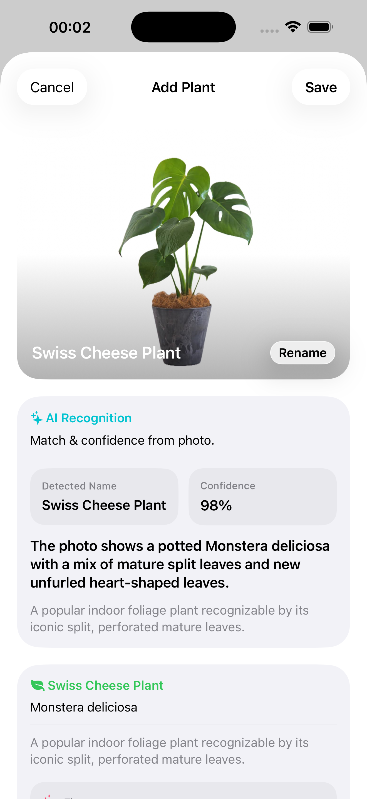
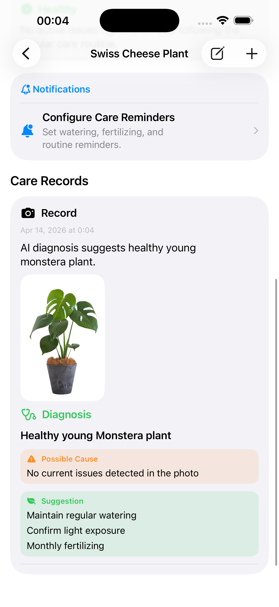
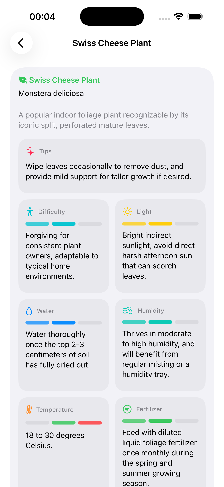

Photo-based plant help
Take or import a photo to identify a plant and get AI-powered diagnosis for visible issues such as yellowing, drooping, spots, or stress.
LeafAid
Identify plants, diagnose visible issues, review care guidance, and keep your plant collection in one place.
App Preview
LeafAid keeps the flow simple: add a plant, recognize it from a photo, review diagnosis history, and manage practical care guidance without hunting through multiple apps or articles.




Take or import a photo to identify a plant and get AI-powered diagnosis for visible issues such as yellowing, drooping, spots, or stress.
See likely causes, practical suggestions, and simple next steps designed for beginners who want to keep plants healthy without guesswork.
Save plants, track records, review diagnosis history, and keep essential plant information available when you need it.
LeafAid is built for people who love plants but do not always know what a struggling leaf is trying to say. The app combines photo input, AI analysis, plant organization, and care reminders into a focused experience for everyday plant care.
For support or privacy questions, contact jihongboo@gmail.com.